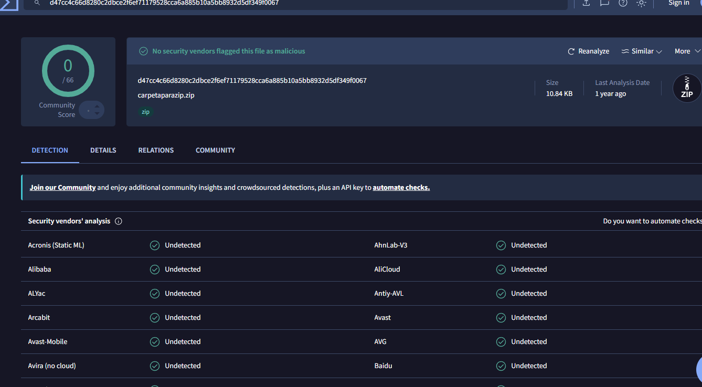
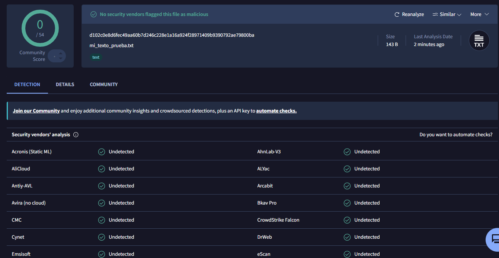
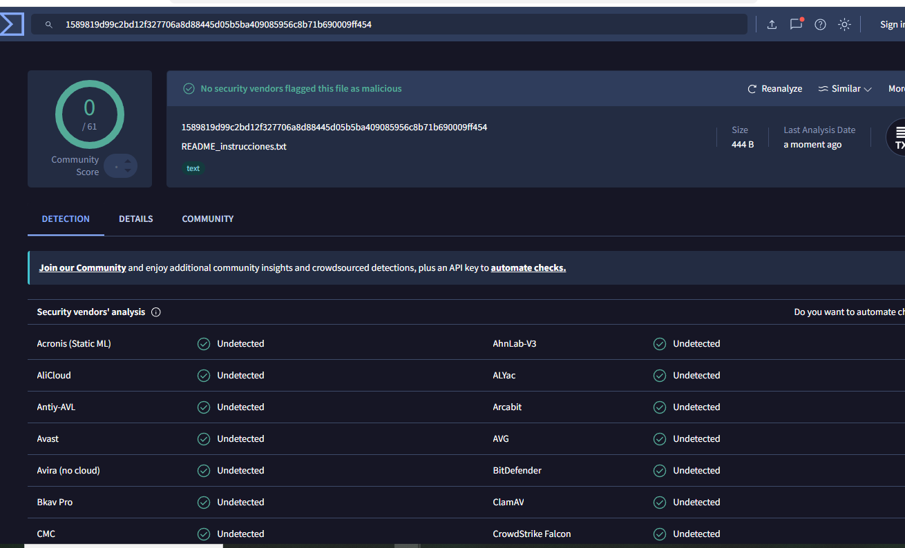
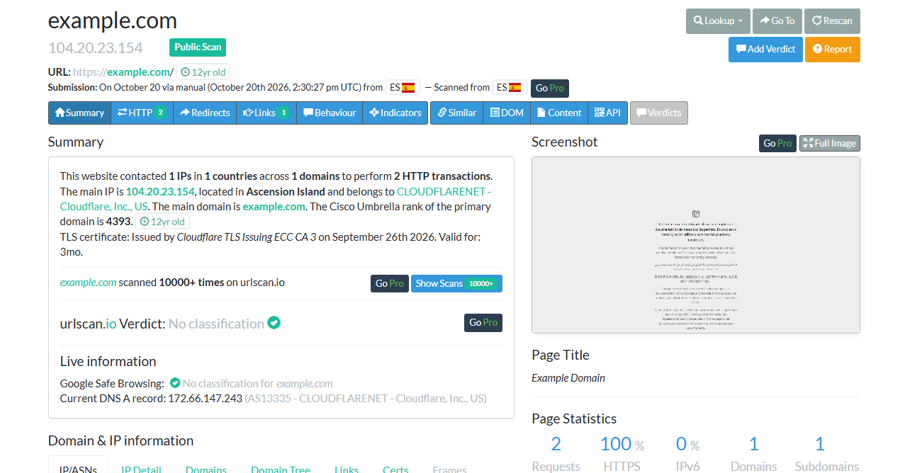
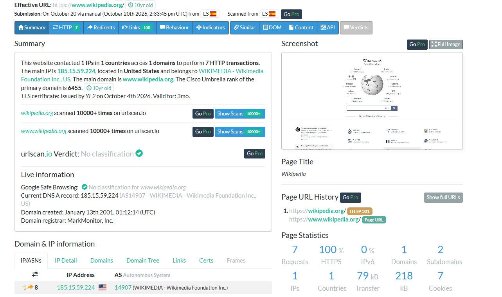
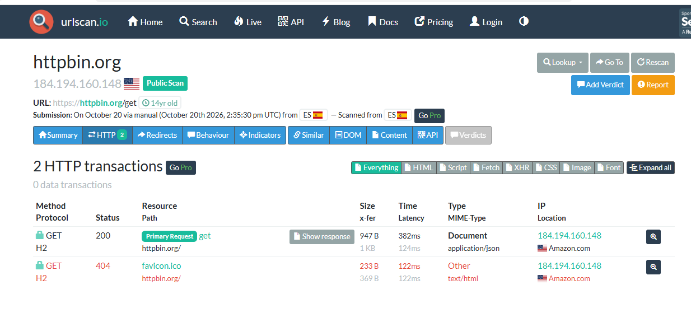

Herramientas online para analizar archivos y URLs
INCIBE es el Instituto Nacional de Ciberseguridad. El enunciado presenta sus recursos de protección de dispositivos y, por las limitaciones de instalación del aula, propone trabajar con dos servicios online: VirusTotal y URLScan.io. Son servicios externos; el título de la práctica no implica que pertenezcan a INCIBE.
VirusTotal reúne resultados de motores de seguridad y permite consultar archivos por su huella. URLScan.io registra la carga de una página y presenta sus peticiones, dominios, IP, redirecciones y otros metadatos.
¿Qué es SHA-256?
Es una función de hash que produce una huella de 256 bits, normalmente representada mediante 64 caracteres hexadecimales. Cambiar el contenido suele producir otra huella, por lo que permite comparar muestras e integridad. No es cifrado reversible ni garantiza por sí sola la autenticidad: se necesita una referencia fiable. Las colisiones son teóricamente posibles; no es correcto afirmar que toda entrada tiene un resultado matemáticamente único.
Se consultó el hash del ZIP y se analizaron dos TXT modificados sin datos sensibles. Para URLScan.io se utilizaron exclusivamente las tres URLs públicas del enunciado. Los datos de las siguientes secciones corresponden a los informes mostrados en las capturas del 20 de octubre de 2026.
VirusTotal: búsqueda del ZIP por SHA-256
Se buscó en VirusTotal la huella SHA-256 proporcionada en el enunciado, sin necesidad de volver a subir el ZIP. Se recuperó un informe existente para carpetaparazip.zip, de 10.84 KB.
d47cc4c66d8280c2dbce2f6ef71179528cca6a885b10a5bb8932d5df349f0067El resultado fue 0 detecciones de 66 motores. La captura indica que el último análisis era de hacía un año: se trata de una consulta de un informe anterior, no de un nuevo análisis realizado en el momento de la búsqueda.

VirusTotal: archivo de texto modificado
Se modificó mi_texto_prueba.txt con contenido académico sin datos sensibles y se seleccionó en File → Choose file. El informe lo identifica como texto, con un tamaño de 143 bytes.
Prueba académica de análisis con VirusTotal.
Archivo de texto sin datos personales.
Contenido modificado para la actividad 11 de la Unidad 1.VirusTotal mostró 0 detecciones de 54 motores. Los motores visibles presentan el estado Undetected.

VirusTotal: README modificado
Se añadió una línea de prueba al archivo README_instrucciones.txt y se subió el fichero modificado a VirusTotal, sin incluir datos sensibles.
Archivo modificado para la práctica académica de VirusTotal. Sin datos sensibles.El informe identifica un archivo de texto de 444 bytes y muestra 0 detecciones de 61 motores.

URLScan.io: example.com
Se analizó https://example.com. El informe registra 2 transacciones HTTP, 1 dominio, 1 IP contactada y 100 % HTTPS. El título de página es Example Domain.
La IP principal del escaneo fue 104.20.23.154, asociada a Cloudflare. El apartado de información en vivo muestra otra dirección DNS; una resolución posterior puede diferir de la registrada durante el escaneo. La geolocalización de una IP de CDN no permite situar físicamente de forma concluyente el servidor de origen.
El veredicto mostrado es No classification.

URLScan.io: Wikipedia y redirecciones
Se introdujo https://wikipedia.org. El historial muestra una redirección HTTP 301 hacia https://www.wikipedia.org/, cuya página tiene el título Wikipedia.
El informe registra 7 peticiones, 1 dominio, 2 subdominios, 1 IP, 100 % HTTPS y 7 cookies. La IP principal es 185.15.59.224, asociada a Wikimedia. El veredicto es No classification.

URLScan.io: respuesta HTTP de httpbin.org/get
Se analizó https://httpbin.org/get. El resumen registra 2 peticiones, 1 dominio, 1 IP contactada, 100 % HTTPS y 0 cookies. La IP del escaneo es 184.194.160.148, asociada a Amazon.
En la pestaña HTTP, la petición principal GET /get devuelve 200 OK, utiliza HTTP/2 sobre HTTPS y su tipo MIME es application/json, correspondiente a una respuesta estructurada en JSON. La segunda petición, GET /favicon.ico, devuelve 404 Not Found con tipo text/html.

Qué información aportan los análisis
| Muestra | Resultado observado | Interpretación |
|---|---|---|
| carpetaparazip.zip | 0/66 · 10.84 KB | Informe existente; último análisis de hacía un año |
| mi_texto_prueba.txt | 0/54 · 143 B | Sin detecciones en los motores del informe |
| README_instrucciones.txt | 0/61 · 444 B | Sin detecciones en los motores del informe |
| example.com | 2 peticiones · 1 dominio · HTTPS | Carga simple; No classification |
| Wikipedia | 7 peticiones · 1 dominio · 2 subdominios | Redirección 301 a www; No classification |
| httpbin.org/get | /get: 200 · JSON; icono: 404 | Petición principal correcta; error independiente del icono |
Valoración de VirusTotal
La búsqueda por hash permitió recuperar un informe sin enviar de nuevo el archivo. Los dos TXT modificados no fueron marcados como maliciosos. Para interpretar un resultado hay que considerar la fecha, los motores y el tipo de muestra, evitando presentar cero detecciones como garantía absoluta.
Valoración de URLScan.io
Las tres páginas usaron HTTPS y presentaron pocas conexiones en esta ejecución. Wikipedia generó más peticiones y una redirección. HTTPBin permitió distinguir una respuesta JSON correcta de un 404 del favicon. La inspección ayuda a entender el comportamiento de la página, pero no sustituye una evaluación completa de su seguridad.
Limitaciones y buenas prácticas
- Los informes son una fotografía de una ejecución: IP, peticiones, cookies y resultados pueden cambiar.
- No se deben enviar archivos privados, credenciales ni URLs internas a servicios de análisis públicos.
- Un hash permite identificar contenido, no demostrar que sea benigno. No classification expresa ausencia de clasificación, no aprobación de seguridad.
- Las conclusiones se limitan a lo visible: no se atribuyen a Wikipedia terceros no observados ni se deducen vulnerabilidades de códigos HTTP aislados.
Conclusión final
La práctica permitió aprender a consultar muestras por SHA-256, analizar archivos modificados y leer informes de navegación. VirusTotal aporta una perspectiva sobre la detección de archivos; URLScan.io aporta una perspectiva sobre las conexiones y respuestas web. Su utilidad depende de interpretar los datos en contexto y combinarlos con otras comprobaciones.
Referencias
Enunciado: Caso práctico -2- Herramientas INCIBE SAD UD1.pdf. Evidencias: seis capturas de los informes consultados.